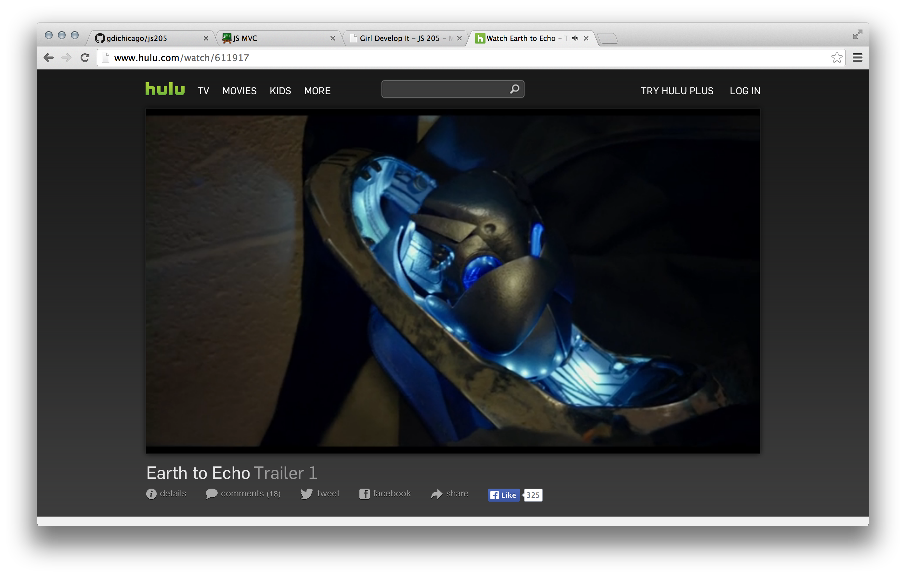

Intro to MVC Frameworks
Intro to MVC Frameworks
Welcome!
Girl Develop It is here to provide affordable and accessible programs to learn software through mentorship and hands-on instruction.
- Some "rules"
- We are here for you!
- Every question is important
- Help each other
- Have fun
Introductions
Tell us about yourself.
- Who are you?
- What do you hope to get out of this class?
- Quirk about yourself?
What we'll cover today
- Brief history of JavaScript and websites
- Examples of big JavaScript web apps
- What does JavaScript do in big apps?
- Making large amounts of JavaScript more managable
- What is a model? What is a view?
- Creating our own mini JavaScript framework
- Nesting views
- MV* frameworks: types and some popular frameworks
Histrory
- JavaScript and Websites
- Then and Now
Web 1.0
JavaScript wasn't really used for much.

Web 2.0
JavaScript for AJAX - this made things a little nicer.

Web Now
JavaScript for everything!

Big Apps
JavaScript is used for big apps that involve lots of user interaction. Things like...
Hulu

Google Maps

Big App Functionality
There's a lot happening in these big apps. Specifically, JavaScript:
- Fetches data (via AJAX)
- Processes and calculates data
- Creates DOM (like w/jQuery)
- Reacts to events
... that's a lot of JS
So much code.
Coursera had 28,848 lines of JavaScript.

It's ok to cry a little.
Making it manageable
We can do a few things to make this code more manageable:
- Split into multiple files
- Modularize the code into re-usable chunks
- Use object-oriented concepts to organize code
- Separate the code into "model" vs. "view"
Model
The model represents your data.
The model:
- Fetches data
- Processes data
View
The view is your presentation layer - what people actually see.
Your views:
- Create the DOM
- Handle DOM events
MVC
- JavaScript
- Dissecting the pieces of frameworks
MVC Features
JavaScript MVC frameworks (usually) share 3 primary features:
- Two-way Binding between HTML and a client-side JavaScript object model View Templates
- Data Storage (local or through a web server to a database)
- URL Routing (keeping the back button working and search engines happy)
Data binding
Data binding is one of the most popular features of JavaScript MVC frameworks. How it works:
- Change data in your HTML inputs
- The JavaScript object bound to the input is immediately updated
- Any other elements that are bound to that property update automatically
Two-way data binding
Most frameworks have two-way data binding. With two-way data binding, you can:
- Update the HTML inputs, which will update your JavaScript object
- Update the JavaScript object, which will update every HTML attribute bound to it
Neat, huh?
View templates
View templates are how we take our JavaScript model data and put it inside of our HTML. There are two ways to solve this:
- String-based templates
- DOM-based templates
String-based templates
String-based templates replace strings or text templates with the dynamic data from your models.
Pros: performance (debatable)
Cons: difficult to debug control flow logic.
Example: Handlebars.js
DOM-based templates
DOM-based templates use traditional HTML markup and add additional attributes to describe the data binding and events.
There is typically less code involved with this approach, and these frameworks often do more work for you.
Data storage
Frameworks store data on the server in one of a few ways:
- automatically synchronizing with RESTful services
- asking the developer to implement do-it-yourself AJAX calls to web services returning
json - allowing either of the above approaches
Routing
Frameworks that use routes allow you to use the back button in browsers.
Seems simple, doesn't it? But with all of that clicking around on one single page, you can't store anything in browser history, which means you can't go back without losing everything.
Not all frameworks use routing.
Sample App

Models & Collections
BookModelBookCollection
Book Model
Sets defaults and computes properties.
function BookModel(bookJSON) {
this.title = bookJSON.title || 'Untitled';
this.author = bookJSON.author || 'Unknown author';
this.asin = bookJSON.asin;
this.thumbnail = bookJSON.thumbnail;
this.rating = bookJSON.rating;
this.review = bookJSON.review || '';
this.url = 'http://www.amazon.com/gp/product/' + this.asin + '?tag=amazonsimilar-20';
}Book Object
Creates a new Book object using the BookModel
var book = new BookModel({
title: "1984",
author: "George Orwell",
asin: "0451524934",
thumbnail: "http://images.amazon.com/images/P/0451524934.01.ZTZZZZZZ.jpg",
rating: 4
});
BookCollection
Creates an array of BookModels and provides sorting options.
function BookCollection(booksJSON) {
this.items = [];
for (var i = 0; i < booksJSON.length; i++) {
this.items.push(new BookModel(booksJSON[i]));
}
};
BookCollection.prototype.sort = function() {
this.items.sort(function(bookA, bookB){
return (bookA.rating - bookB.rating);
});
};BookCollection Object
Adds a newly created BookModel item to the BookCollection.
var booksJSON = [{
title: "1984",
author: "George Orwell",
asin: "0451524934",
thumbnail: "http://images.amazon.com/images/P/0451524934.01.ZTZZZZZZ.jpg",
rating: 4
}]
var books = new BookCollection(booksJSON);Exercise 1
Models in MVC
BookShelfView
And then a BookShelfView, that uses BookViews.
function BookShelfView(books) {
var shelfDiv = $('<div>');
for (var i = 0; i < books.items.length; i++) {
var book = books.items[i];
shelfDiv.append(new BookView(book));
}
return shelfDiv;
}BookShelf View
function BookShelfView(books) {
var shelfDiv = $('<div>');
for (var i = 0; i < books.items.length; i++) {
var book = books.items[i];
// Create a div with a linked image inside it,
// and add that to the shelf div
var bookDiv = $('<div class="book">');
var bookLink = $('<a>');
bookLink.attr('href', book.url);
var bookCover = $('<img>');
bookCover.attr('src', book.thumbnail);
bookLink.append(bookCover);
bookDiv.append(bookLink);
shelfDiv.append(bookDiv);
// On mouseover, pop up the review
bookDiv.bind('mouseover', function(e) {
var reviewDiv = $('<div class="book-review">');
reviewDiv.html('<strong>' + book.rating + ' stars: </strong>' + (book.review || ' No review.'));
reviewDiv.css({'position': 'absolute', 'top': e.pageY, 'left': e.pageX});
$('body').append(reviewDiv);
});
bookDiv.bind('mouseout', function() {
$('.book-review').remove();
});
}
return shelfDiv;
}Whoa, really?
Yeah, I know. That's a lot. But! We can break that into two smaller, nested views:
BookViewBookShelfView
Our BookShelfView can be comprised of a bunch of little BookViews. So what does that look like?
BookView
First we make a BookView:
function BookView(book) {
var bookDiv = $('<div class="book">');
var bookLink = $('<a>');
bookLink.attr('href', book.url);
var bookCover = $('<img>');
bookCover.attr('src', book.thumbnail);
bookLink.append(bookCover);
bookDiv.append(bookLink);
// Attach event listeners
return bookDiv;
}BookShelfView
And then a BookShelfView, that uses BookViews.
function BookShelfView(books) {
var shelfDiv = $('<div>');
for (var i = 0; i < books.items.length; i++) {
var book = books.items[i];
shelfDiv.append(new BookView(book));
}
return shelfDiv;
}MVC BookShelf
Exercise 2
Views in MVC
Frameworks

MVC
Three components: Model, View, Controller.
Controllers send commands to the Model that update the Model's state. Controllers also send commands to the View that change the presentation of the model.
MVP
Three components: Model, View, Presenter.
MVP is derived from MVC.
Presenters are a middle layer, similar to a Controller. All logic related to presentation goes in the Presenters. The Model and the View don't talk to each other at all.
Examples: BackboneJS
MVC vs. MVP
They're quite similar, but not identical.

MVVM
Three components: Model, View, ViewModel.
ViewModels send messages between the View and the Model - it is a mediator or converter. It changes Model info into View info, passes commands from the View into the Model, and exposes public properties, commands, and abstractions.
Examples: KnockoutJS
MV*
Something else! There are other types of MV* frameworks out there. They're not as popular, so don't worry about them for now, but it is good to know that there are other options out there.
Further Reading
Breakdown of differences between MV* frameworks.
Todo MVC
Todo MVC implements a Todo list app in many of the popular JavaScript frameworks. It's a great tool to play with the different frameworks to see the differences.
Questions?
Just like Elmo taught us that everybody poops...

Everybody also has questions.